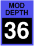

WAVESHAPER mod depth
These control the amount of waveshaper width modulation. The displayed values are the percentage width variation per unit of modulation, if the “saws” or “pulse” shape is selected, or the number of cycles of FM per unit of modulation if one of the “FM” shapes are selected. This has no effect for a “noise” or “impulse” shape is selected.
Toolkit
These are contained in the Waveshaper mod clusters within the Waveshaper section.
Chroma panel
These are contained in the WIDTH section of the right panel, under the following parameter numbers:
| mod 1 | mod 2 | |
|  |
|
These appear in the display as Wave Mod1-2 Depth.
MIDI
These are accessed via the following NRPNs:
| mod 1 | mod 2 | ||
| A | 1,51 | 1,53 | |
| B | 2,51 | 2,43 |
Since these are bipolar parameters, the values are offset by 64.
Values
The values are displayed as percentages or cycles:
| MIDI | percent | cycles | ||
| 0 | –100% | –16cyc | ||
| • • • |
• • • |
• • • |
||
| 64 | off | off | (default) | |
| • • • |
• • • |
• • • |
||
| 127 | +100% | +16cyc |